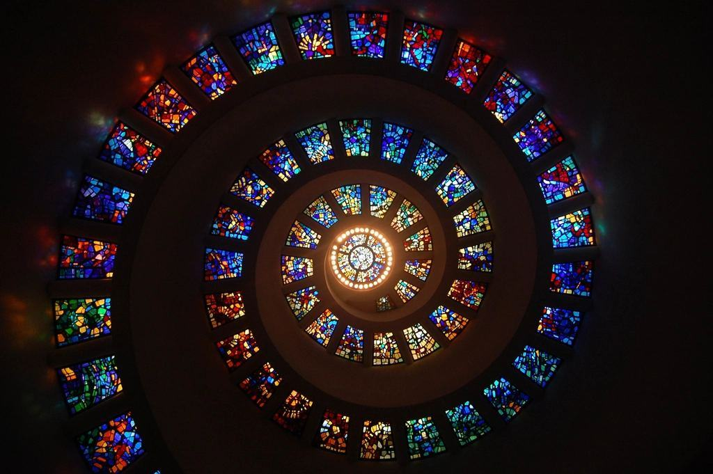
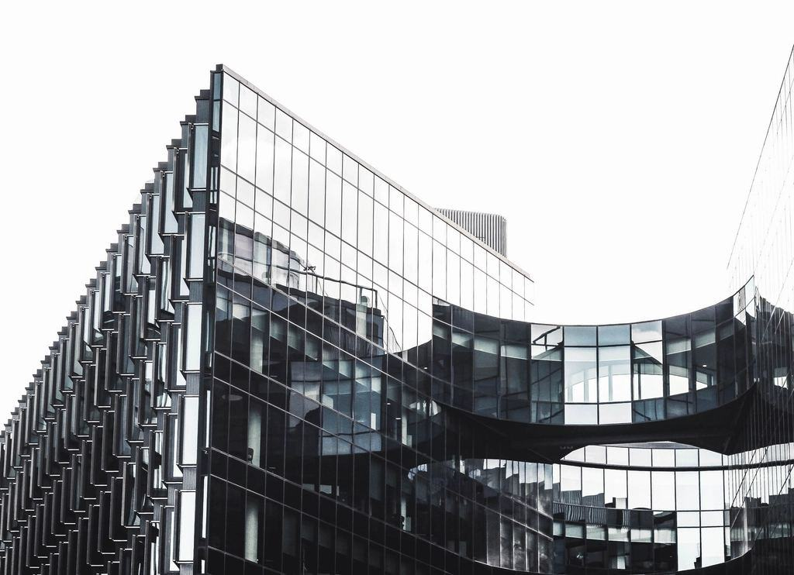
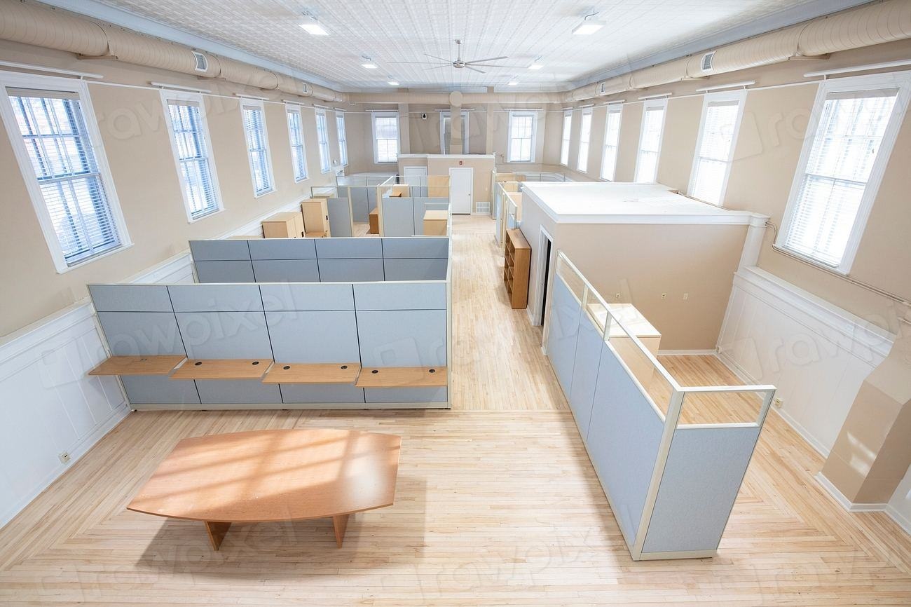
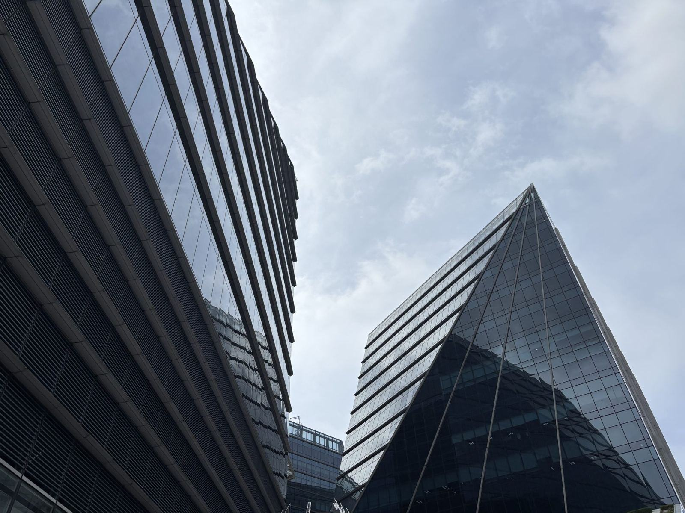
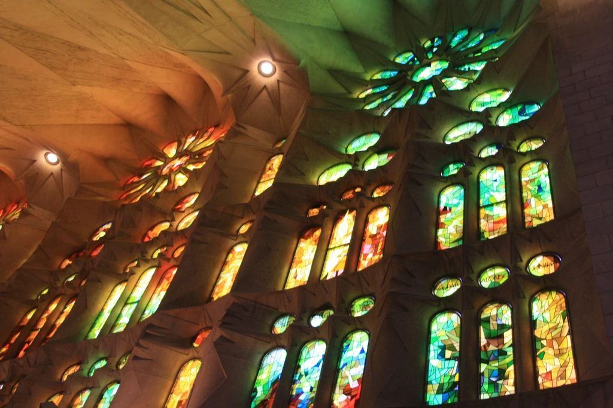
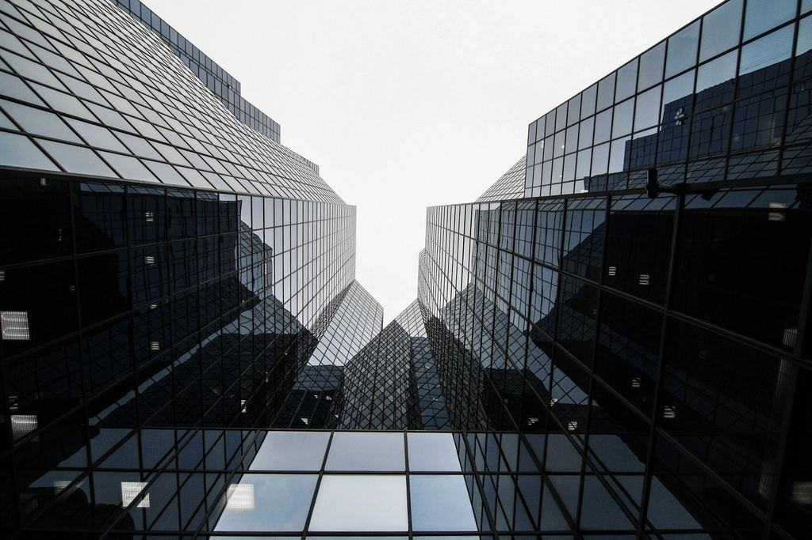

Tjänster
Vi är 45 anställda och sedan 2019 delägs företaget av Kerstin Lindell och sex medarbetare. Vi säljer främst till glasmästerier, köks- och badrumsfabriker och möbelindustrin, men har också en fabriksbutik där privatpersoner kan köpa duschväggar och glasskivor på mått.
Vad ska glaset användas till?

Härdning och laminering
Glasmästerier skickar beställningen via orderportalen före klockan tolv, och glaset härdas inom tre dagar. Laminerat glas tillverkas i autoklav upp till 2,5 × 5 meter.
Varje skiva märks med CE-stämpel och spårbarhetsnummer.

Isolerglas
Isolerglaslinjen tillverkar två- och treglasrutor med argongas och varm distanslist för fönstertillverkare och glasmästare i södra Sverige.
Kapaciteten är 600 rutor per skift, och vi tar även enstaka specialrutor.

Bearbetning och tryck
CNC-maskinerna borrar hål, fräser urtag och polerar kanter. Med digitaltryck bränner vi in färg och mönster i glaset vid härdningen, så att det tål disk, ånga och sol.
Stänkskydd till köksfabriker är vår snabbast växande produkt.

Fabriksbutiken i Nybro
Privatpersoner och hantverkare kan köpa duschväggar, glasskivor och speglar på mått direkt från fabriken. Det mesta hämtas inom en vecka.
Vi har också en hylla med avvikande mått och provskivor till halva priset.
Från order till glasställ
- 1

Order i portalen
Kundkontot ger priser, ritningsuppladdning och leveransdag direkt. Privatkunder beställer i fabriksbutiken.
- 2

Skärning och CNC
Glaset skärs automatiskt ur stora skivor och bearbetas i CNC-maskinerna efter ritning.
- 3

Härdning eller laminering
Glaset härdas vid 620 grader eller lamineras i autoklav, och kontrolleras med kvalitetsscanner.
- 4
Leverans med egen bil
Tre lastbilar med glasställ kör fasta rutter i Götaland, och glasställen hämtas tillbaka vid nästa leverans.
CE-märkt och spårbart
- CE-märkt härdat och laminerat glasTillverkning enligt EN 12150 och EN 14449 med extern tillverkningskontroll.
- Isolerglas enligt EN 1279Typprovade isolerglas med löpande provning av gasfyllnad och kantförsegling.
- ISO 9001 och 14001Certifierat ledningssystem för kvalitet och miljö sedan 2012.
- ByggvarubedömningenVåra glasprodukter är bedömda och kan användas i miljöcertifierade byggprojekt.